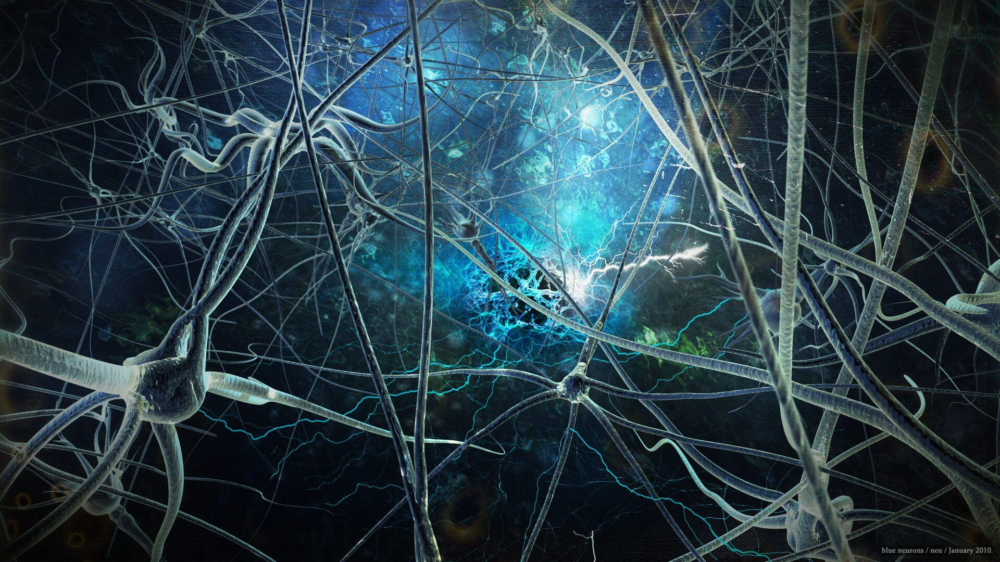
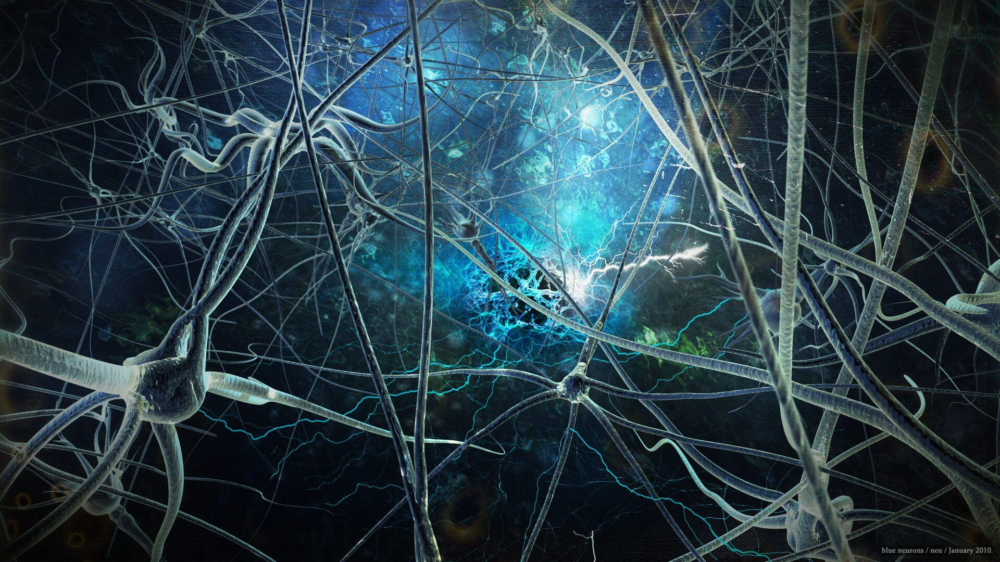

Πώς ακριβώς λειτουργεί η Τεχνητή Νοημοσύνη (AI);
Η τεχνητή νοημοσύνη λειτουργεί με συνδυασμό μεγάλων ποσοτήτων δεδομένων με γρήγορους, επαναληπτικής διαδικασίας και ευφυείς αλγορίθμους, επιτρέποντας στο λογισμικό να μαθαίνει αυτόματα από μορφές ή χαρακτηριστικά των δεδομένων. Η τεχνητή νοημοσύνη είναι ένα πεδίο μελέτης που περιλαμβάνει πολλές θεωρίες, μεθόδους και τεχνολογίες, καθώς και τα παρακάτω κύρια υποπεδία:
-
Machine learning (μηχανική μάθηση): αυτοματοποιεί την κατασκευή αναλυτικών μοντέλων. Χρησιμοποιεί μεθόδους από τα νευρωνικά δίκτυα (neural networks), τη στατιστική, την επιχειρησιακή έρευνα (operational research) και τη φυσική για την εύρεση κρυφών γνώσεων εντός των δεδομένων χωρίς να έχει προγραμματιστεί εμφανώς για το πού να εξετάσει ή τι να συμπεράνει.
-
Neural network (νευρωνικό δίκτυο): είναι ένας τύπος μηχανικής μάθησης που αποτελείται από αλληλοσυνδεόμενες μονάδες (όπως οι νευρώνες) που επεξεργάζονται τις πληροφορίες ανταποκρινόμενο σε εξωτερικές εισαγωγές δεδομένων, προωθώντας πληροφορίες μεταξύ κάθε μονάδας. Η διαδικασία απαιτεί πολλαπλές διελεύσεις στα δεδομένα προκειμένου να βρεθούν συνδέσεις και να γίνει εξαγωγή νοήματος από ακαθόριστα δεδομένα.
-
Deep learning (σε βάθος μάθηση): Χρησιμοποιεί τεράστια neural networks με πολλά επίπεδα μονάδων επεξεργασίας, αξιοποιώντας τις εξελίξεις στην υπολογιστική ισχύ και τις βελτιωμένες τεχνικές εκπαίδευσης για την μάθηση πολύπλοκων μορφών σε μεγάλες ποσότητες δεδομένων. Οι κοινές εφαρμογές της περιλαμβάνουν την αναγνώριση εικόνας και ομιλίας.
-
Cognitive computing (γνωστική υπολογιστική): είναι ένα υποπεδίο του AI που στοχεύει σε μια φυσική, ανθρωπόμορφη αλληλεπίδραση με μηχανές. Κατά τη χρήση τεχνικών AI και cognitive computing, ο απώτατος στόχος είναι η προσομοίωση ανθρώπινων αλληλεπιδράσεων από μια μηχανή μέσω της ικανότητας να ερμηνευτούν εικόνες και ομιλία – και να υπάρξει κανονική απάντηση από την μηχανή η οποία έχει ειρμό.
-
Computer vision : βασίζεται στην αναγνώριση μορφών (pattern recognition) και στο deep learning ώστε να αναγνωρίζεται τι υπάρχει σε μια εικόνα ή ένα βίντεο. Όταν οι μηχανές μπορούν να επεξεργαστούν, να αναλύσουν και να κατανοήσουν εικόνες μπορούν να συλλάβουν εικόνες ή βίντεο σε πραγματικό χρόνο και να ερμηνεύσουν τα περιβάλλοντά τους.
-
Natural language processing (NLP) - (επεξεργασία φυσικής γλώσσας ή ΕΦΓ): είναι η ικανότητα των υπολογιστών να αναλύουν, να κατανοούν και να παράγουν ομιλούμενη γλώσσα, συμπεριλαμβανομένης της ομιλίας. Το επόμενο στάδιο στην ΕΦΓ είναι η φυσική γλωσσική αλληλεπίδραση, η οποία επιτρέπει στους ανθρώπους να επικοινωνούν με υπολογιστές χρησιμοποιώντας την κανονική, καθημερινή γλώσσα για την εκτέλεση καθηκόντ
 
